Simulated Brute Force Detection and Response
Deploying and responding to attack vectors in a home lab environment (June 2026).
This report documents a self-simulated attack on a home network designed to practice identifying and responding to brute-force attacks using both a Security Information and Event Management (SIEM) system and responding with an Endpoint Detection and Response (EDR) system. It outlines the environment setup, the attack simulation, the detection mechanisms, the response actions taken, and the troubleshooting process when initial configurations failed. The narrative shifts perspective throughout: at times I explain the methodology as the attacker who orchestrated the simulation, while in other sections I write from the viewpoint of a defender analyzing and responding to the threat.
Executive Summary
I deployed a Wazuh agent on an Ubuntu droplet to monitor for security events. During a simulated SSH brute-force attack using Hydra, I detected large spikes in authentication failures and identified the attacker's source IP. I wrote custom level-12 Wazuh rules to trigger an active response that drops connections from the attacker. When the initial rule configuration failed to fire as expected, I debugged the issue, applied an interim PAM-based block, and eventually identified the correct rule ID to permanently secure the system.
Technologies Used
- Ubuntu 24.04: Target environment OS
- Wazuh: SIEM and EDR platform (manager, dashboard, and agents)
- Kali Linux: Attacker environment
- Hydra: Network logon cracker used for the brute-force attack
- Nmap: Network scanner used for initial reconnaissance
- VMware: Virtualization platform for local lab machines
- DigitalOcean: Cloud provider for the target droplet
Environment
The lab network consisted of a 24/7 uptime mini-PC serving as a network file share, my home workstation, a Wazuh host VPS for the dashboard and manager, and a Kali Linux VM.
I provisioned a target machine, defense-client-1, using a default Ubuntu 24.04 image on a DigitalOcean droplet (1 GB RAM, 1 vCPU, 25 GB SSD). I installed the Wazuh agent and connected it to my manager. Based on the initial agent vulnerability scan, I upgraded the kernel to 6.8.0-124 to mitigate CVE-2026-43304 and CVE-2026-43037. In its initial state, the target had all ports open and relied on password-based SSH authentication.
Attack Simulation
From the Kali VM, I ran an intense Nmap scan against defense-client-1. The scan identified an open TCP port 22 and fingerprinted the OS as Ubuntu. I then launched a brute-force attack using Hydra and the NCSC 100k most-used passwords list. For this simulation, I targeted only the root user because I knew the account existed. In a real penetration test, I would broaden the approach and target a wider range of common default usernames—such as root, admin, ubuntu, and server.
Detection and Analysis
Monitoring defense-client-1 from the defense perspective, I noticed a massive inbound spike in failed authentications through the threat hunting events manager. The majority of these events were SSH-related, with syslog acting as the presumed derivative from the attack. I also observed a large spike in the events count evolution on the dashboard, alongside a distinct ATT&CK Credential Access spike.
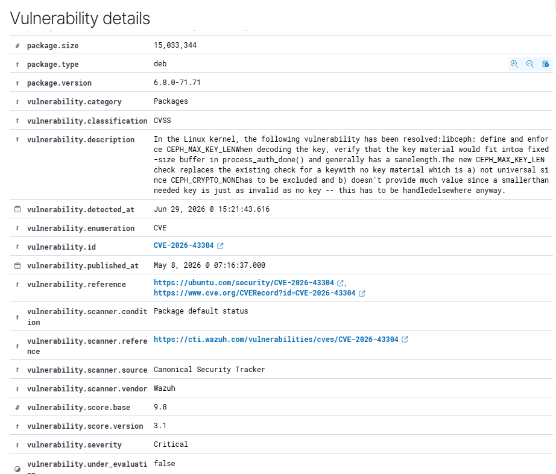
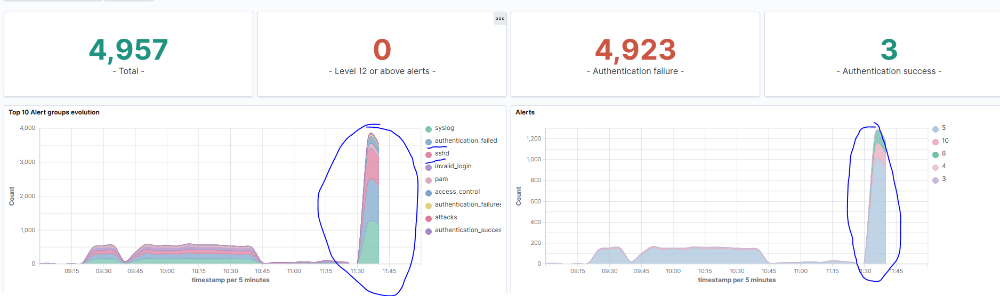
I determined this was a possible brute-force attack by filtering for rule.id: "5710" (authentication failed) and rule.id: "5712" (brute force indicator). Both are logical checks during a massive spike in authentication failures.
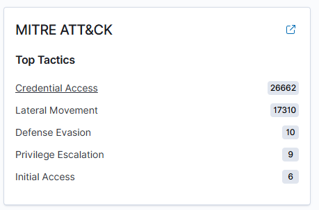
I moved to reading individual event logs to gather data. I found that the vast majority of authentication requests originated from 162.226.4.x (my home IP) while cycling through source ports for the outgoing connection.
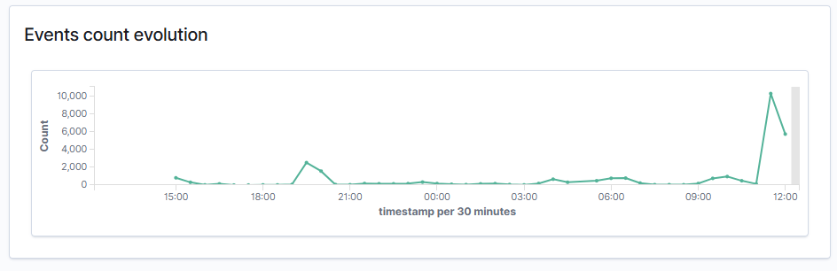
These two images represent snaps of the specific sshd auth failure logs to show the repeated source IP consistency with varying source ports. Several other types of logs also showed the source IP as the issue, such as pluggable authentication module (PAM) logs indicating an access failure.
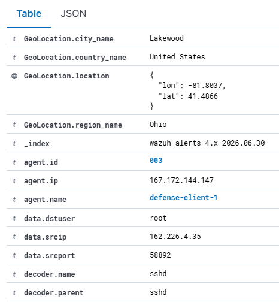
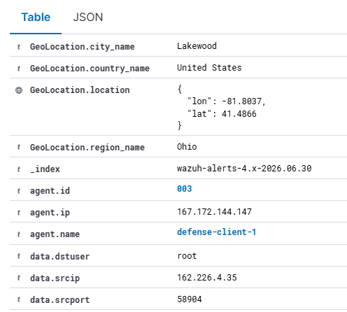
I also noted a consistent destination user: it appeared the attack only attempted to guess the password for the root account.
Response Actions
I could see the attack coming in and failing, but I needed an immediate detection and response mechanism. I decided to design custom Wazuh rules to throw a high-severity alert (level 12) if the brute force actually succeeded. I implemented two specific detection scenarios: one for multiple failed authentication attempts followed by a successful login, and another for a brute force on a non-existent user followed by a successful login. I built these custom rules primarily for high-fidelity detection of a worst-case scenario—an attacker finally getting in.
To handle the threat proactively, I built an automatic response that drops any connection from the source IP for 10 minutes. Rather than tying this active response to my custom post-breach rules, I triggered the firewall drop using Wazuh's pre-existing built-in rules for brute-force detection (rules 5712 and 5720). Relying on the built-in rules for the active response applies to a wider range of situations, allowing the system to block the attacker during the attempt rather than waiting for a successful login.
This is a screenshot from my Hydra log prior to instituting the active response rule, where you can see the brute-force attack proceeding as expected.
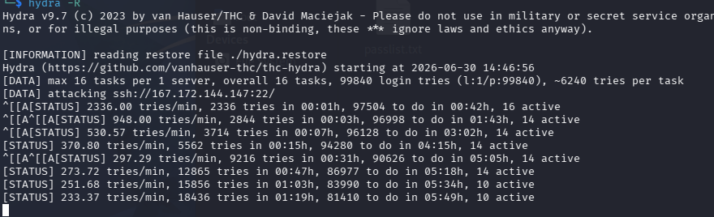
Issues Encountered and Resolution
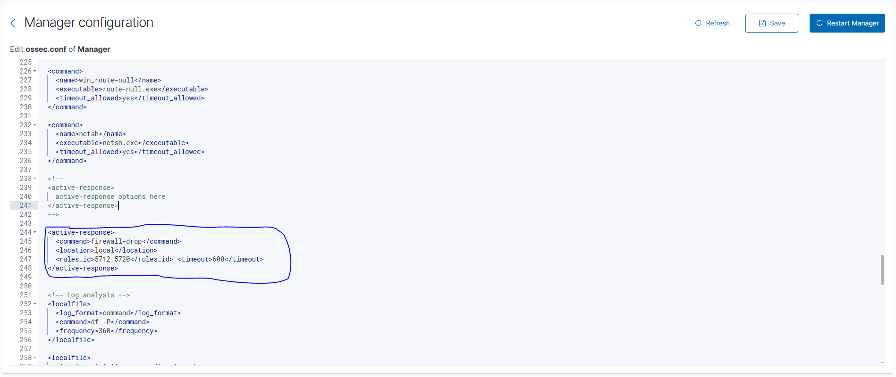
At this point in the lab, I ran into trouble. Even though I created the Wazuh active response configuration, I saw no indication that it was taking effect. Hydra continued to record attempts with no difference, and the events manager continued to pick up SSHD attempts. I verified that the Wazuh agent was online, that the Wazuh manager had restarted after adding the rule, and that firewall-drop was a correctly defined command.
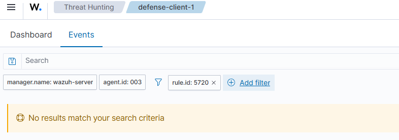
Rule 5712 appeared to work fine. I saw password spraying attacks from around the web (for example, one targeting the username server from Bulgaria), which confirmed the system was detecting external noise. I also noted that rule 40111 (maximum authentication attempts exceeded) fired correctly. Since 5720 should fire when the source IP and source user are correctly read during the attack vector, I needed to figure out why one fired but not the other.
I still had not figured out why rule 5720 failed to appear. Because I was simulating a real-world defense situation, I attempted to secure the network immediately before fine-tuning the solution. I saw that the PAM rule (5551) fired directly and served as a valid indicator. I added 5551 to my manager active response rule and restarted it.
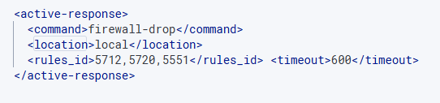
Adding 5551 stopped the brute-force attack on my system.
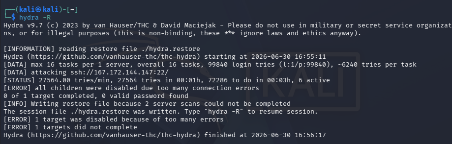
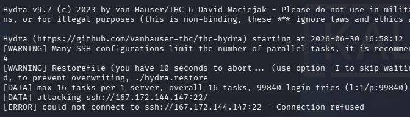
I ran the attack again to confirm the active response worked correctly.
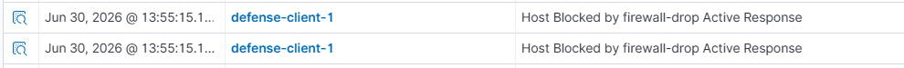
After locking down the network, I established why 5720 failed to work: for my configuration, the correct rule ID is 5763, which I identified by reading the event logs.
Appendix: Configuration Excerpts
<group name="linux,sshd,">
<rule id="100001" level="12">
<if_matched_sid>5712</if_matched_sid>
<if_sid>5715</if_sid>
<description>Brute force: non existent user into successful auth</description>
<mitre>
<id>T1110</id>
</mitre>
</rule>
</group>
<group name="linux,sshd,">
<rule id="100002" level="12">
<if_matched_sid>5720</if_matched_sid>
<if_sid>5715</if_sid>
<description>Brute force: multiplied failed into successful auth</description>
<mitre>
<id>T1110</id>
</mitre>
</rule>
</group><active-response>
<command>firewall-drop</command>
<location>local</location>
<rules_id>5712,5720</rules_id>
<timeout>600</timeout>
</active-response>Note: Rule 5551 was added to the active response configuration during troubleshooting, as described in the narrative.